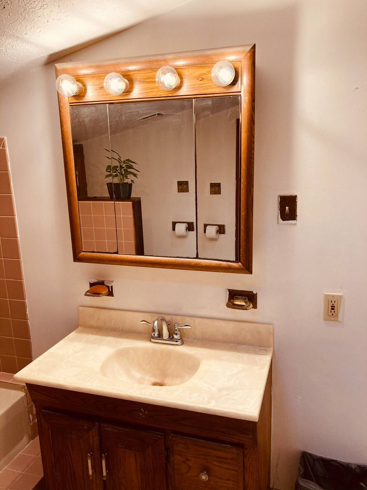

01
Share your plan
Give us your target move-in date, preferred town, household details, and the length of stay you have in mind.
Long-term rentals
For renters looking for a more settled home base, we review longer commitments individually. Tell us what you need and we will explain current homes, terms, deposits, screening, and monthly payment expectations.
A steadier landing place
We want expectations to be clear before anyone commits. Our team will talk through availability, furnished items, utilities, screening, deposit requirements, and how monthly payments are arranged.
Give us your target move-in date, preferred town, household details, and the length of stay you have in mind.
We match your request against the current homes and explain the next steps for the specific cottage.
Once approved and agreed, we coordinate the move-in details and any secure payment steps.

Details matter
Longer stays deserve a clear conversation. We would rather answer the practical questions early than leave a renter guessing later.
Start with a conversation
Apply directly and we will follow up with the options that fit your target dates and community.